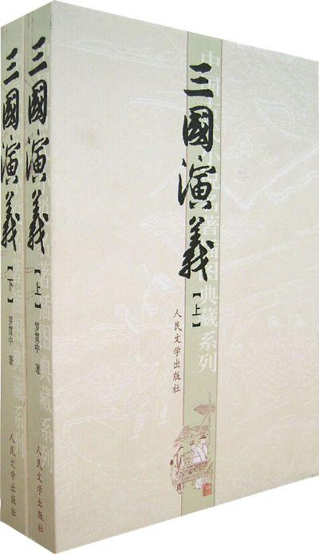

 内容介绍 东汉末年，天下大乱、群雄纷争，魏、蜀、吴三国相继倔起，成鼎足之势，演出了一幕分久必合、合久必分的历史长剧。本书就是以此为历史背景演绎出的一部历史小说。 汉末爆发黄巾起义，在镇压起义的过程中涌现出一批割据一方、拥兵自重的豪强，他们彼此为了各自利益又重新混战。汉灵帝死后，少帝刘辨继位，外戚何进当权，宦官杀死何进。袁绍起兵诛杀宦官，又被董卓打败，董卓废刘辨而立献帝刘协。司徒王允巧施连环计，以貂蝉离间董卓、吕布父子，然后联合各路豪强，杀死董卓，而王允又被董卓部将--李傕，郭汜所杀。随后，袁绍军与另外17镇诸侯割据混战，最后，形成了三股强大的势力：北方的曹操“挟天子以令诸侯”，先后歼灭袁绍、袁术等势力，统一了黄河流域，占据了中原地带；刘备最初转徙不定，直至他三顾茅庐。得诸葛亮出山辅佐，才制定了正确有效的战略方针，即以“帝室之胄”、 “光复汉室”为旗号，以“联吴抗曹”为基本方针。最后，经过“赤壁之战”，迫使曹操北还，得以占据益州与荆州部分。逐步发展壮大；江东孙氏自孙坚开始，就以江东六郡81县为根据地站稳了脚跟，直至孙权，实力日益增强。 此后，三国争战层层展开。先是孙权乘关羽和曹兵交战之际，派兵偷袭荆州，关羽败走麦城，死于孙权之手。不久，曹操病死，其子曹丕废汉自立，定国号“魏”。刘备亦继汉统，建立蜀汉。为报关羽被害之仇，刘备亲征江东，结果孤军深入，为 陆逊所败，刘备病死白帝城，托孤于诸葛亮。其后，孙权建立吴国。 刘备死后，诸葛亮辅佐少主刘禅，独撑危局。其间，诸葛亮坚持联吴抗曹的基本方略，七擒孟获之后，稳定了后方。又先后六出祁山伐魏，但均以失败告终，诸葛亮也积劳成疾，病死军中。他死后，姜维继其职，先后九伐中原，同样无功而返。后主刘禅昏职聩，朝政腐败，蜀汉国力日渐衰弱。 《三国演义》是中国第一部长篇章回体历史演义的小说，以描写战争为主，反映了魏、蜀、吴三个政治集团。